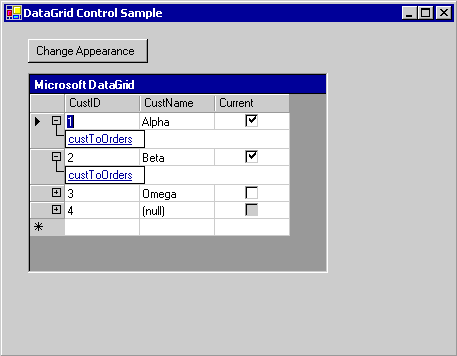
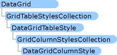

Общие сведения об элементе управления DataGrid (Windows Forms)
Note
Элемент управления DataGridView заменяет элемент управления DataGrid и расширяет его функциональные возможности; однако при необходимости элемент управления DataGrid можно сохранить для обратной совместимости и использования в будущем. Дополнительные сведения см. в разделе Различия элементов управления DataGridView и DataGrid в Windows Forms.
Элемент управления DataGrid в Windows Forms отображает данные в виде ряда строк и столбцов. В самом простом случае сетка привязана к источнику данных с помощью единственной таблицы, не содержащей связей. В этом случае данные отображаются в виде простых строк и столбцов, как в электронной таблице. Дополнительные сведения о привязке данных к другим элементам управления см. в разделе Привязка данных и Windows Forms.
Если элемент DataGrid привязан к данным с помощью нескольких связанных таблиц и в сетке включена навигация, в каждой строке сетки будут отображаться расширители. С помощью расширителя пользователь может переходить из родительской таблицы в дочернюю. При щелчке узла отображается дочерняя таблица, а при нажатии кнопки "Назад" — исходная родительская таблица. Таким образом в сетке отображаются иерархические связи между таблицами.
На следующем снимке экрана показана управления DataGrid, привязанный к данным с помощью нескольких таблиц:

Элемент управления DataGrid может предоставлять пользовательский интерфейс для набора данных, навигацию между связанными таблицами и широкие возможности форматирования и редактирования.
Отображение и обработка данных — это разные функции: Этот элемент управления обрабатывает пользовательский интерфейс, тогда как обновление данных обрабатывается архитектурой привязки данных Windows Forms, а также в .NET Framework поставщиков данных. Таким образом обеспечивается синхронизация элементов управления, привязанных к одному источнику данных.
Note
Если вы знакомы с элементом управления DataGrid в Visual Basic 6.0, вы можете обратить внимание на значительные отличия элемента управления DataGrid в Windows Forms.
Если сетка привязана к DataSet, столбцы и строки автоматически создаются, форматируются и заполняются. Дополнительные сведения см. в разделе Data Binding and Windows Forms. После создания элемента управления DataGrid можно добавлять, удалять, изменять порядок и форматировать столбцы и строки в зависимости от потребностей.
Привязка данных к элементу управления
Для работы элемента управления DataGrid он должен быть привязан к источнику данных с помощью свойств DataSource и DataMember во время разработки или метода SetDataBinding во время выполнения. Эта привязка указывает DataGrid на созданный экземпляр объекта источника данных, например DataSet или DataTable. Элемент управления DataGrid отображает результаты действий, выполняемых с данными. Большинство операций с данными выполняются не через DataGrid, а через источник данных.
Если данные в привязанном наборе данных обновляются посредством какого-либо механизма, элемент управления DataGrid отражает изменения. Если в сетке данных и его стили таблиц и столбцов ReadOnly свойству присвоено false, можно обновлять в наборе данных с помощью DataGrid элемента управления.
В элементе управления DataGrid на определенный момент времени может отображаться только одна таблица. Если между таблицами определено отношение "родительская-дочерняя", пользователь может перемещаться между связанными таблицами для выбора таблицы, которая будет отображаться в элементе управления DataGrid. Сведения о привязке DataGrid управления ADO.NET источника данных во время разработки или во время выполнения, см. в разделе как: Привязка элемента управления DataGrid в Windows Forms к источнику данных.
Источники данных, допустимые для DataGrid, включают следующие:
DataTable класс
DataView класс
DataSet класс
DataViewManager класс
Если источником является набор данных, он может быть объектом в форме или объектом, переданным в форму веб-службой XML. Привязку можно выполнять к типизированным или нетипизированным наборам данных.
Кроме того, элемент управления DataGrid можно привязать к дополнительным структурам, если объекты в структуре (например, элементы в массиве) предоставляют открытые свойства. В сетке будут отображаться все открытые свойства элементов в структуре. Например, если выполняется привязка элемента управления DataGrid к массиву объектов клиента, все открытые свойства этих объектов отобразятся в сетке. Иногда это означает, что хотя вы можете выполнить привязку к структуре, полученная связанная структура не всегда будет иметь практическое применение. Например, можно выполнить привязку к массиву целых чисел, но поскольку тип данных Integer не поддерживает открытое свойство, данные в сетке отображаться не будут.
Можно выполнить привязку к следующим структурам, если их элементы предоставляют открытые свойства:
к любым компонентам, реализующим интерфейс IList; (сюда входят одномерные массивы);
к любым компонентам, реализующим интерфейс IListSource;
к любым компонентам, реализующим интерфейс IBindingList;
Дополнительные сведения о возможных источниках данных см. в разделе Источники данных, поддерживаемые Windows Forms.
Отображение сетки
Обычно элемент управления DataGrid используется для отображения одной таблицы данных из набора данных. Однако этот элемент управления можно также использовать для отображения нескольких таблиц, включая связанные таблицы. Отображение сетки настраивается автоматически в зависимости от источника данных. В таблице ниже указано, что именно отображается в сетке в разных конфигурациях.
| Содержимое набора данных | Что отображается |
|---|---|
| Одна таблица | Таблица отображается в сетке. |
| Несколько таблиц | В сетке может отображаться иерархическое представление, с помощью которого пользователь может переходить к нужной таблице. |
| Несколько связанных таблиц | В сетке может отображаться иерархическое представление, с помощью которого можно выбирать таблицы. Кроме того, можно задать отображение в сетке родительской таблицы. Записи в родительской таблице позволяют пользователям переходить к связанным строкам дочерних таблиц. |
Note
Таблицы в наборе данных связываются с помощью DataRelation. Также см. в разделе создать связи между наборами данных.
Когда элемент управления DataGrid отображает таблицу и свойству AllowSorting присвоено значение true, данные можно сортировать, щелкая заголовки столбцов. Пользователь также может добавлять строки и редактировать ячейки.
Связи между наборами таблиц отображаются для пользователей с помощью структуры навигации "родительская-дочерняя". Родительские таблицы представляют высший уровень данных, а дочерние таблицы — это таблицы данных, производные от отдельных листингов в родительских таблицах. В каждой родительской строке, содержащей дочернюю таблицу, отображаются расширители. При щелчке расширителя создается список гиперссылок на дочерние таблицы. Когда пользователь переходит по ссылке, отображается дочерняя таблица. Щелкнув значок (Показать/скрыть родительской строки) будут скрываться сведения о родительской таблице или вновь выводиться на экран, если пользователь скрыл их ранее. Пользователь может нажать кнопку "Назад", чтобы вернуться к предыдущей таблице.
Столбцы и строки
DataGrid состоит из коллекции объектов DataGridTableStyle, содержащихся в свойстве TableStyles элемента управления DataGrid. Стиль таблицы может содержать коллекцию объектов DataGridColumnStyle, содержащихся в свойстве GridColumnStyles класса DataGridTableStyle. Можно изменить TableStyles и GridColumnStyles свойств с помощью редакторов коллекций, доступных через свойства окна.
К любому классу DataGridTableStyle, связанному с элементом управления DataGrid, можно получить доступ через коллекцию GridTableStylesCollection. Коллекцию GridTableStylesCollection можно изменить в конструкторе с помощью редактора коллекции DataGridTableStyle или программным путем с помощью свойства TableStyles элемента управления DataGrid.
На следующем рисунке показан объекты, включенные в элементе управления DataGrid:

Стили таблиц и столбцов синхронизируются с объектами DataTable и DataColumn путем задания для их свойства MappingName соответствующих свойств TableName и ColumnName. Когда класс DataGridTableStyle, не имеющий стилей столбцов, добавляется в элемент управления DataGrid, привязанный к допустимому источнику данных, и для свойства MappingName этого стиля таблицы задается допустимое свойство TableName, для этого стиля таблицы создается коллекция объектов DataGridColumnStyle. Для каждого объекта DataColumn в коллекции Columns объекта DataTable в коллекцию GridColumnStylesCollection добавляется соответствующий класс DataGridColumnStyle. GridColumnStylesCollection осуществляется с помощью GridColumnStyles свойство DataGridTableStyle. Столбцы можно добавлять или удалять из сетки, используя метод Add или Remove для коллекции GridColumnStylesCollection. Дополнительные сведения см. в разделе Как Добавление таблиц и столбцов в Windows Forms элемента управления DataGrid и как: Удаление или скрытие столбцов в Windows Forms элемента управления DataGrid.
Коллекция типов столбцов расширяет класс DataGridColumnStyle, добавляя целый ряд возможностей форматирования и редактирования. Все типы столбцов наследуют от базового класса DataGridColumnStyle. Создаваемый класс зависит от свойства DataType класса DataColumn, который является базовым для DataGridColumn. Например, объект DataColumn, для свойства DataType которого задано значение Boolean, будет связан с DataGridBoolColumn. В следующей таблице описан каждый из этих типов столбцов.
| Тип столбца | Описание |
|---|---|
| DataGridTextBoxColumn | Принимает и отображает данные в виде форматированных или неформатированных строк. Возможности редактирования аналогичны возможностям редактирования данных в простом элементе TextBox. Наследует от DataGridColumnStyle. |
| DataGridBoolColumn | Принимает и отображает значения true, false и NULL. Наследует от DataGridColumnStyle. |
Двойной щелчок правого края столбца изменяет размер столбца для отображения полной подписи и самой широкой записи.
Стили таблиц и столбцов
После установки формата по умолчанию для элемента управления DataGrid можно настроить цвета, которые будут использоваться при отображении определенных таблиц в сетке данных.
Для этого необходимо создать экземпляры класса DataGridTableStyle. Стили таблиц определяют форматирование отдельных таблиц, которое не следует путать с форматированием самого элемента управления DataGrid по умолчанию. В определенный момент времени каждая таблица может иметь только один заданный для нее стиль.
В некоторых случаях требуется, чтобы определенный столбец отличался от остальных столбцов таблицы данных. Можно создать настраиваемый набор стилей столбцов с помощью свойства GridColumnStyles.
Стили столбцов связаны со столбцами в наборе данных так же, как стили таблиц связаны с таблицами данных. Так же как и таблица может иметь только один стиль на конкретный момент времени, каждому столбцу можно назначить только один стиль в рамках определенного стиля таблицы. Эта связь определяется в свойстве MappingName столбца.
Если вы создали стиль таблицы не добавлены в него стили столбцов, Visual Studio добавит стили столбцов по умолчанию при создании формы и сетки во время выполнения. Тем не менее если вы создали стиль таблицы и добавить в него стили столбцов, Visual Studio не создаст стили столбцов. Кроме того, необходимо определить стили столбцов и назначить их с помощью имени сопоставления, чтобы нужные столбцы отображались в сетке.
Поскольку выбор столбцов для отображения в сетке данных выполняется путем назначения им стиля столбца, можно включить в набор данных столбцы данных, которые не отображаются в сетке, не назначая им стиль. При этом, поскольку столбец данных включен в набор данных, можно программным образом редактировать данные, которые не отображаются.
Note
Как правило, создание стилей столбцов и добавление их в коллекцию стилей столбцов выполняется перед добавлением стилей таблиц в коллекцию стилей таблиц. При добавлении в коллекцию пустого стиля таблицы стили столбцов создаются автоматически. Следовательно, при попытке добавить в коллекцию новые стили столбцов с повторяющимися значениями MappingName будет создано исключение.
Иногда может потребоваться изменить один столбец из нескольких (например, набор данных содержит 50 столбцов, а вам нужны только 49 из них). В этом случае проще импортировать все 50 столбцов и программно удалить один, а не добавлять все 49 столбцов по отдельности.
Форматирование
Форматирование, которое может применяться к элементу управления DataGrid, включает стили границ, стили линий сетки, шрифты, свойства подписи, выравнивание данных и чередующиеся фоновые цвета для строк. Дополнительные сведения см. в разделе Как Форматирование элемента управления Windows Forms DataGrid.
События
Помимо общих событий управления, таких как MouseDown, Enter и Scroll, элемент управления DataGrid поддерживает события, связанные с редактированием и навигацией в сетке. Свойство CurrentCell определяет, какая ячейка выбрана. Событие CurrentCellChanged вызывается, когда пользователь переходит к новой ячейке. При переходе к новой таблице через отношение "родительская-дочерняя" вызывается событие Navigate. Событие BackButtonClick возникает, когда пользователь нажимает кнопку "Назад" при просмотре дочерней таблицы, а событие ShowParentDetailsButtonClick возникает при нажатии значка "показать/скрыть" для родительских строк.
См. также
- Элемент управления DataGrid
- Практическое руководство. Привязка элемента управления DataGrid в Windows Forms к источнику данных
- Практическое руководство. Добавление таблиц и столбцов в элемент управления DataGrid в Windows Forms
- Практическое руководство. Удаление или скрытие столбцов элемента управления DataGrid в Windows Forms
- Практическое руководство. Форматирование элемента управления DataGrid в Windows Forms